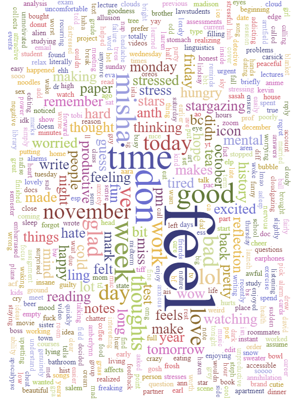

my mental chatter
CELINE TSANG
My ELP was centered around examining both my daily thoughts and the difference in these thoughts when I went stargazing in my local community once a week, in an attempt to address my everyday anxieties and hopefully increase my role in combatting climate change. The word cloud that I created based off of the final 35-page Google Doc of my thoughts can be found below. Thank you for taking the time to look!
excerpts from the project
"I see my ELP as part of a tidying up of the curiosity that so characterizes humanity, and as working towards branding another trait onto humans – one of a deeper compassion for those beyond ourselves."
"I view Area X as pockets in the Earth where nature is wholly, or almost wholly, untouched. In this way, it exists in its purest form. I am convinced that to let Area X “work on” me, as Tompkins alludes to, is to allow these forces of nature back into my life, and back into a reciprocating relationship. If I am a part of this anthropogenic poison, I want to be transformed. And seeing as we have existed for years in a relationship that highlighted our human dominance, it is only fair that we let nature take back the reins for a moment."
"When I began stargazing so many weeks ago, I believed I loved the stars. I can honestly say now that I have probably never loved the stars, because I never saw the relationship as reciprocal or as I-Thou, but rather solely through the lens of what the night sky could do for me. I think it is now long past my turn to do something in return for the night sky."